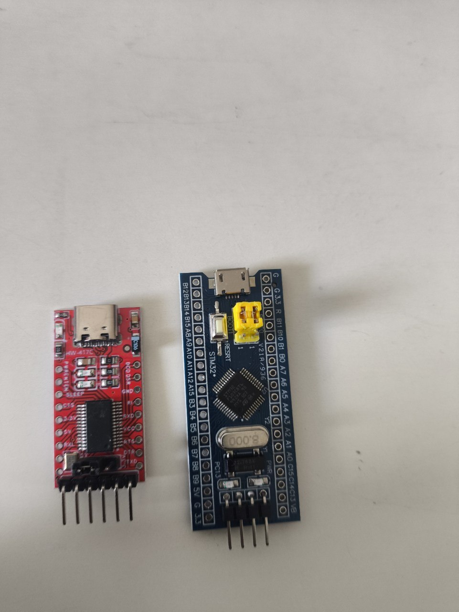
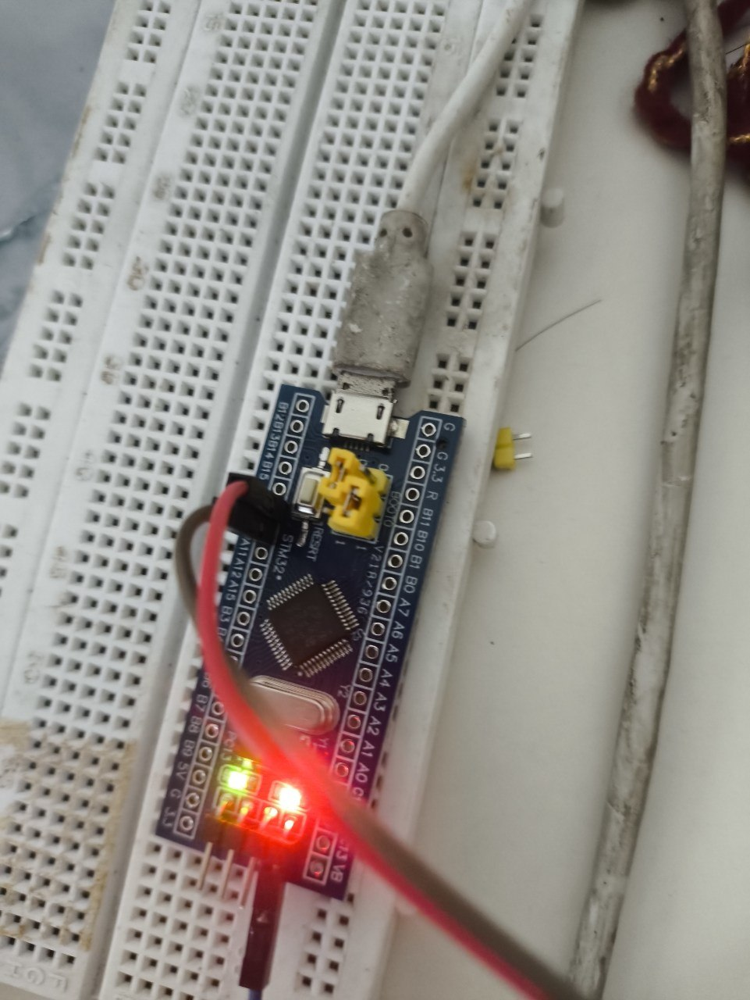

Blinking an LED on the Blue Pill: Once With Arduino, Once With Just Registers
Two boards, no soldering iron, and one onboard LED — lit first through the Arduino framework, then lit again with nothing but memory-mapped registers and a linker script I wrote myself.
Parts
- "STM32F103C8T6 Blue Pill"
- "HW-417C USB-to-UART adapter"
- "Micro-USB cable"
- "Breadboard + jumper wires"
I've been doing Arduino projects for a while, but everything so far has been breadboard-and-sensor stuff sitting on top of a framework that hides the chip from you almost completely. This week I picked up a Blue Pill — an STM32F103C8T6 dev board — specifically because it doesn't hide anything if you don't want it to. The goal for the first session was small on purpose: get one LED to turn on. The real goal, the one I actually cared about, was doing it twice — once the easy way, once the way where I write every register myself.
The hardware

Two boards for this one. The blue one is the Blue Pill itself — an STM32F103C8T6 on a minimal breakout, micro-USB power, a reset button, a yellow BOOT0 jumper, and PC13 wired to an onboard LED. The red one is an HW-417C, a USB-C to UART adapter, which is the only way to talk to the Blue Pill at all — it has no onboard debugger, no USB bootloader over its own USB port. Everything goes through that little red board's TX/RX pins. I also had an Arduino Uno and a breadboard on hand, but neither ended up in this build — the Blue Pill runs standalone once it's flashed. The start was confusing and the shop keeper didn't inform me the names of the products just that they are typically bought together. It is a chaotic but sincere start!
The problem
Almost nothing about the wiring was where I expected it to be. Both boards are covered in silkscreened pin labels, but most of those labels sit over bare, unpopulated through-holes — there's no actual pin sticking up, so a jumper wire has nothing to grip. The only holes you can plug straight into are the Blue Pill's bottom 4-pin power header and the adapter's one 6-pin block. A9 and A10, the pins I actually needed for UART TX/RX, are both on the bare unpopulated row. No soldering iron in the house, so the fix was almost embarrassingly analog: snap single pins off a spare header strip and friction-fit them into the A9 and A10 holes by hand, snug enough that a jumper wire would then grip them.
The other scare was power. The adapter's header exposes both a 5V and a 3.3V , and the Blue Pill's logic is 3.3V-only — feeding it 5V on the wrong pin risks killing the chip. Rather than gamble on it, I sidestepped the whole question: the Blue Pill gets its power from its own micro-USB cable, and the adapter only ever contributes three wires — GND, TXD, RXD. Both boards end up plugged into USB at the same time, which looks redundant until you remember why. Eventually I figured out how the adapter's 5V and 3.3V work, it's simply covered by a plastic cap.
Then there's BOOT0 versus BOOT1, two separate jumpers that are easy to conflate the first time you meet them. Only BOOT0 needs to move, from 0 to 1, to make the chip boot into its built-in UART bootloader instead of running whatever's already flashed. BOOT1 stays put. And BOOT0 has to move back to 0 afterward, or every future reset drops straight back into the bootloader instead of running the program — which looks exactly like a failed flash the first time it happens to you, and isn't.
Round one: Arduino framework

First pass, I wanted the framework doing as much work as possible, just to prove the toolchain and the wiring were both sound before touching anything lower-level. PlatformIO with board = bluepill_f103c8, framework = arduino, upload_protocol = serial — no manual arm-gcc install, PlatformIO carries its own toolchain. The whole program is four lines:
#include <Arduino.h>
void setup() {
pinMode(PC13, OUTPUT);
digitalWrite(PC13, LOW); // PC13 LED on the Blue Pill is active-low
}
void loop() {}First build failed on pinMode not declared — turns out the Arduino IDE injects Arduino.h invisibly and PlatformIO doesn't, so that include has to be explicit. Second surprise: writing LOW turns the LED on. PC13's onboard LED is active-low, wired so the sink pulls current when the pin is low — common on these boards, not something I'd have guessed from the pin's name. With BOOT0 at 1 and a fresh RESET press, platformio run -t upload found the adapter as COM9 and the LED came on solid. That was the whole milestone for round one: prove the chain works end to end, framework included.
Round two: bare metal
Same wiring, same BOOT0 dance, but this time framework is dropped from platformio.ini entirely — no Arduino, no HAL, just build_flags = -nostartfiles and a linker script I wrote myself. Three pieces instead of one file:
The startup code is the first thing the chip actually reads at address 0x08000000 on reset — a tiny vector table with just the initial stack pointer and the address of Reset_Handler, nothing else, no fault handlers, no interrupt vectors:
uint32_t vectors[] __attribute__((section(".isr_vector"))) = {
SRAM_END,
(uint32_t)&Reset_Handler,
};
void Reset_Handler(void) {
uint32_t *src = &_sidata, *dst = &_sdata;
while (dst < &_edata) *dst++ = *src++; // copy .data out of flash
dst = &_sbss;
while (dst < &_ebss) *dst++ = 0; // zero .bss
main();
while (1);
}The linker script is what makes those _sdata/_edata/_sbss/_ebss symbols mean anything — it lays out FLASH at 0x08000000 and RAM at 0x20000000, and tells the linker exactly where .data's initial values live in flash versus where they need to end up in RAM before main() can trust them. And main() itself is just three memory-mapped registers, addresses taken straight from the reference manual:
#define RCC_APB2ENR (*(volatile uint32_t *)0x40021018)
#define GPIOC_CRH (*(volatile uint32_t *)0x40011004)
#define GPIOC_ODR (*(volatile uint32_t *)0x4001100C)
RCC_APB2ENR |= (1u << 4); // turn on GPIOC's clock — nothing works until this bit is set
GPIOC_CRH &= ~(0xFu << 20);
GPIOC_CRH |= (0x1u << 20); // PC13: push-pull output, 10MHz
while (1) {
GPIOC_ODR &= ~(1u << 13); delay(800000);
GPIOC_ODR |= (1u << 13); delay(800000);
}
Made it blink this time instead of just holding it on, mostly so I'd have a visible way to tell the two versions apart without checking a terminal. It flashed clean on the first real attempt — no build errors, no mystery silence, just BOOT0 flipped back to 1 and a RESET press. The number I wasn't expecting: 152 bytes of flash and 0 bytes of RAM, against 10.8KB flash and 1.1KB RAM for the identical-looking Arduino version. That whole difference is framework overhead — HAL init, the Arduino runtime, all the generality a framework carries so it works on boards it's never seen. None of it is needed to blink one pin.
The clock is still running on the chip's default internal 8MHz oscillator — I never touched the PLL, so the delay loop is tuned by eyeballing it, not calibrated to real milliseconds, and the vector table only knows about reset, nothing else. Both of those are fine for a polling loop that can't fault, and both are exactly the kind of thing that stops being fine the moment a project needs real timing or an interrupt. What I actually took away from doing it twice, back to back, wasn't "bare metal is better" — the Arduino version took ten minutes and worked first try, and there's no version of this where that's not worth something. It's that the 10.8KB wasn't hiding complexity, it was replacing complexity I now know how to write myself. Seeing both numbers on the same board, from the same LED, made the abstraction feel like a choice I'm making instead of a black box I'm depending on.
Notes from readers
Comments — via GitHub